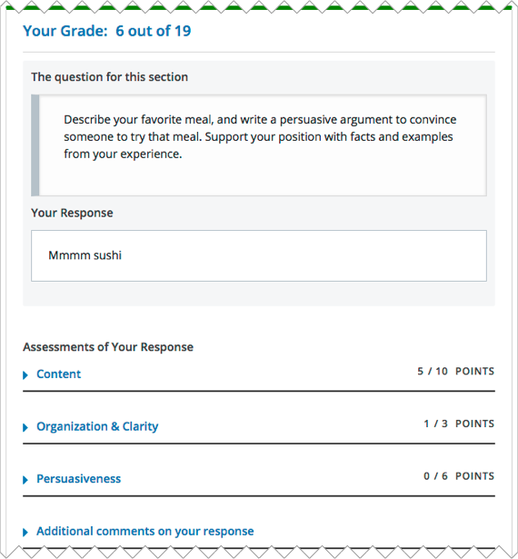
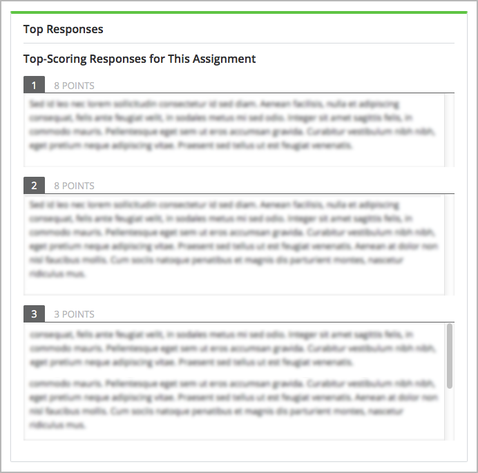

13. Completing Essay Assignments¶
In some courses, you are asked to write essays in response to topics or to questions that do not have simple answers. These essay assignments are called open response assessments (ORA) because they have a flexible design, and can include various assessment options, including peer assessments and self assessments.
In some assignments, you can also submit an image or other type of file. For information about uploading images or other files in your open response assessment, see Submit a File with Your Response.
Note
If you want to try an example open response assessment problem, check out the edX demonstration course, edX Demo course. In addition to giving you a tour of a typical edX course, the edX Demo course contains information about open response assessments and an example peer assessment.
This section describes how to work with open response assessments in your edX course.
13.1. The Steps in an Open Response Assessment¶
Open response assessments can have several possible steps, which appear in the order that you must complete them. Future steps are not available until you complete your current step. This topic describes all of the possible steps. The actual steps in your assignment depend on how your course team has designed the assignment.

Your Response. In this first step in an open response assessment, you submit your response to the assignment question.
Learn to Assess Responses. In this step you practice grading some responses. You evaluate example responses and then see how the grade you gave differs from the grade that a member of the course team gave. The goal is to learn how to assess responses similar to the way that course staff would assess them, using the same rubric.
Assess Peers. You grade responses that other learners in the course have submitted, and other learners in the course grade your responses.
Your course team decides the number of peer assessments that you have to perform and receive. For example, you might be required to assess the responses of two of your peers, as well as receive assessments by two of your peers.
Assess Your Response. In this step you assess your own response, using the same rubric that you used to perform peer assessments.
Staff Grade. Members of the course team assess your response. If you receive a staff grade for your assignment, it always overrides any peer assessment grades that you receive.
Note
Course staff can grade your open response assignment even if a staff assessment step is not included in the assignment. This might happen if, for example, you receive peer assessments of your response that are inappropriate. In such cases, course staff can perform an assessment of your response that overrides any peer assessment grades.
13.2. How Grading Is Done In Open Response Assessments¶
Grading for every type of assessment in an ORA assignment is done by comparing each response against the same set of guidelines, called a rubric. Every open response assessment has a rubric provided by the course team.
A rubric consists of several criteria and a set of options for each criterion.
The parts of the rubric in the image below are labelled as follows.
Criteria. Each criterion describes characteristics that a response should have, such as concepts that a response should cover, or the amount of supporting information that a response must include.
Options. Each criterion has options which describe how well each response satisfies the criterion. The options are usually a range of ratings, for example “Fair”, “Good”, or “Excellent”, with details to help you decide the rating.
When you assess a response, you evaluate the response, and for each criterion, select the option that best describes how well the response met that criterion.
{kind=link}
13.3. Completing an Open Response Assessment¶
An open response assessment’s steps are arranged in the order that you must complete them.
The topics in this section describe how you complete an example open response assessment that includes a response step, an assessment training step, a peer assessment step, a self assessment step, and a staff grade step. Your actual assignment might not contain all of these steps. Possible steps are described in The Steps in an Open Response Assessment.
At any time during an assessment, you can see your progress at the bottom of the page under Your Grade. A message indicates the steps that must still be completed before you can receive your final grade for the assignment.
13.3.1. Submit Your Response¶
To submit your response to an open response assessment question, follow these steps.
Read each question carefully. Some course teams include important information in the question, such as how long a response must be, or specific topics that your response must cover.
Note
The total word count for your response cannot be more than 10,000 words (approximately the equivalent of 20 pages of 8.5x11 inch paper, with single-spaced text).
For each question, enter your response into the field under Your Response.
Note
In some assignments, you can submit images or other types of files along with or instead of a written response. If you can upload files in your assignment, Browse and Upload your files options are available below the response field.
For information about uploading images or other files in your ORA assignment, see Submit a File with Your Response.
Note
For assignments that require LaTeX responses, a Preview in LaTeX option is available that you can use to preview your work before you submit your response.
When you have finished answering all of the questions, select Submit your response and move to the next step.
If you need more time, you can select Save Your Progress to save a draft of your responses, and then come back and submit them later.
{kind=link}
After you submit your response, the next step, which is usually either assessment training or peer assessment, becomes available. However, you do not have to start the next step right away. If you want to stop working and come back later, just refresh or reopen your browser when you come back.
13.3.1.1. Submit a File with Your Response¶
If your assignment requires or allows you to submit images or other types of files, you see two buttons below the response field: Choose Files one one side of the page, and Upload Files on the other side of the page.
Note
The cumulative size of the files that you upload must be less than 500 MB.
Image files can be in .jpg, .gif, or .png format.
To upload files in your response, follow these steps.
Below the response field, select Choose Files.
In the dialog box that opens, select the file that you want to upload, and then select Open.
A preview image of each file is visible.
In the boxes next to each preview image, enter a written description of the image. This step is required to help learners who cannot see or access the image understand and evaluate your response.
Across from the Choose Files button, select Upload files.
You can replace the files that you uploaded with different files until you submit your response. To replace your uploaded files, repeat steps 1-3.
13.3.1.2. View Your Submitted Response¶
You can view your own response at any time after you submit it.
Select the Your Response heading in the assignment to expand the section.
Your response appears, along with the status of the response, and information about additional steps you have to complete before you receive your grade.
13.3.2. Learn to Assess Responses¶
Some ORA assignments include a training step so that you can learn how to effectively assess responses for a later peer assessment step.
In a training step, you evaluate example responses using a provided rubric as a guide for grading. After you complete the grading, you are shown how the grades you gave differ from the grades that a member of the course team gave. The goal is to learn how to assess responses similar to the way that course staff would assess them, using the same rubric.
Complete the training step as follows.
Read each sample response and the rubric carefully, then for each criterion, select the option that you think best reflect the response.
When you are satisfied with your assessment, select Compare your selections with the instructor’s selections.
If all of your selections are the same as the instructor’s selections, the next sample response opens automatically.
If any option that you select is not the same as the instructor’s selection, you see the response again, with a message indicating that your assessment differs from the instructor’s assessment.
If your assessment did not match the instructor’s assessment, review the response again and consider why the instructor assessed the response differently than you did. Continue to assess the example response until the options you select for all criteria match options selected by the instructor.
{kind=link}
When you have successfully assessed the sample responses, the next step in the assignment becomes available.
13.3.3. Assess Peer Responses¶
In the peer assessment step of an open response assessment, you perform assessments of responses that were submitted by other learners in your course. The course team sets the requirement for how many peer assessments each learner is expected to complete.
At the top of the peer assessment step, you can see counts of how many responses you are expected to assess and how many you have already assessed. For example, if you are required to perform 3 peer assessments and are about to start your first peer assessment, the count appears as “1 of 3”. Within the Assess Peers step, you see each question, a learner’s response, and the rubric that you will use to grade the response.
{kind=link}
You assess other learners’ responses by selecting options in the rubric. This process will be familiar to you if your assignment included the learn to assess responses step. Additionally, this step has a field below the rubric where you can provide comments about the learner’s response.
Note
In addition to a field for overall comments on a learner’s response, some peer assessments include Comments fields for individual criteria that allow you to enter up to 300 characters. In some assessments, you must enter comments before you can submit the assessment.
After you have selected options in the rubric and provided comments about the response, select Submit your assessment and move to response #{number}.
After you submit each peer assessment, a response from another learner becomes available, until you have assessed the required number of responses. The count of how many responses you have assessed updates after you assess each response.
When you have completed the required number of peer assessments, the next step in the assignment becomes available.
Note
If there are no submitted responses available for grading, a status message indicates that no peer responses are currently available for you to assess, and that you should check back later.
13.3.4. Assess Additional Peer Responses (optional)¶
If you have assessed the required number of peer responses, the peer assessment step collapses so that only the Assess Peers heading is visible.
If you want to, you can assess more peer responses than the assignment requires. To assess more responses, select the Assess Peers heading to expand the step, and then select Continue Assessing Peers.
13.3.5. Assess Your Response¶
When you have completed the required number of peer assessments, the self assessment step of the assignment becomes available. You see your response along with the same rubric that you used in the peer assessment step.
Perform an assessment of your own response, and then select Submit Your Assessment.
When you have completed assessing your own response, the next step in the assignment becomes available. If there are no further steps, and if you have received the required number of peer assessments on your own response, you can receive your score.
13.3.6. Staff Grade¶
In some assignments, a staff assessment step is included for a member of the course team to grade your responses. You do not need to take any action for this step. The status of the Staff Grade step changes to Complete when a member of the course team has completed grading your response.
If a Staff Grade step exists in your assignment, you receive your final assignment grade when staff grading is complete, even if your response has not been assessed by the required number of peer reviewers.
Note
Course staff can grade your open response assignment even if a staff assessment step is not included in the assignment. This might happen if, for example, you receive peer assessments of your response that are inappropriate. In such cases, course staff can perform an assessment of your response that overrides any peer assessment grades. If a member of the course staff has graded your response, a Staff Grade section appears in the grading details for your assignment.
13.4. Receive Your Score and Provide Feedback¶
You receive your score for an open response assessment when you have completed the following steps.
Submitted your response to the question.
Completed the assessment training step (if included).
Performed the required number of peer assessments.
Performed a self assessment (if included).
Received the required number of peer assessments of your own work.
Received a staff assessment (if included).
If other learners are still assessing your response, you see the following message below the Assess Your Response step.
Your Grade: Waiting for Peer Assessment
Your response is still undergoing peer assessment. After your peers have
assessed your response, you will see their feedback and receive your final
grade.
If you see this message, check back periodically until peer assessments of your work are complete.
13.4.1. View Your Score¶
When peer assessment is complete, and if the assignment does not include a staff assessment step, you can see the scores you received from all of the peers who scored your work, as well as your self assessment. You can also see any comments that your peers have provided.
{kind=link}
If the assignment included a staff assessment step, you receive your final grade when a member of the course team has graded your response. If a staff assessment step is included in the assignment, peer assessment grades and comments are included in the assignment grade details, but the staff grade becomes the final grade.
13.4.2. Provide Feedback on Peer Assessments Received¶
If you want to, you can provide feedback on the peer scores that you received, under Provide Feedback on Peer Assessments.
{kind=link}
13.4.3. View Top Responses (optional)¶
Some open response assessments include a Top Responses section below your own score, that shows the highest scoring responses that were submitted for each question.
If your course team included this section in your assignment, it appears only after you have completed all the steps of the assignment.
{kind=link}
13.5. How Peer Assessment Scores Are Calculated¶
Note
If a staff grade is provided in the assignment, either because a staff assessment step was included or because a member of the course team graded your response to override inappropriate peer assessments, peer assessments are not taken into account in the grading. If a staff grade exists, it is always your final grade.
Peer assessments are scored by criteria. Each criterion’s score is the median, not the average, of the scores that each peer assessor gave that criterion. For example, if the Ideas criterion in a peer assessment receives 10 from one learner, 9 from a second learner, and 5 from a third learner, the score for that criterion is 9 (the median), not 8 (the average).
Your final score for a peer assessment is the sum of the median scores for each individual criterion.
For example, your response might receive the following scores from peer assessors.
Criterion Name |
Peer 1 |
Peer 2 |
Peer 3 |
Median for the Criterion |
|---|---|---|---|---|
Ideas (out of 10) |
10 |
7 |
8 |
8 |
Content (out of 10) |
7 |
9 |
8 |
8 |
Grammar (out of 5) |
4 |
4 |
5 |
4 |
FINAL SCORE (out of 25) |
20 |
To calculate the final score, the system adds the median score for each criterion.
Ideas median (8 out of 10) + Content median (8 out of 10) + Grammar median (4 out of 5) = final score (20 out of 25)
Note, again, that your final score is not the median of the scores that each individual peer assessor gave the response. Your final score is the sum of the median scores for each individual criterion.
13.6. Canceled Responses¶
If the course team deems a response that you have submitted to be inappropriate, they can cancel that response and remove it from peer grading. In the open response assessment you see an indicator that your submission was canceled, with the date and time of the cancellation, and a comment by the course team member about the reason.
The course team might allow you to submit a replacement response for the canceled one, or they might not. If they do not allow you to submit a replacement response, your grade is zero for the assignment.